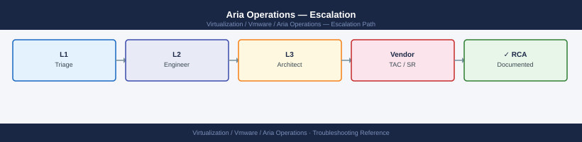
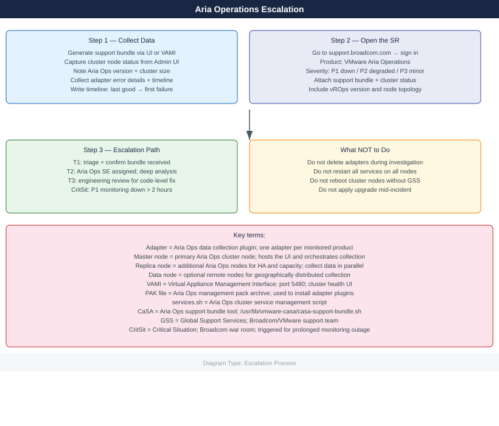
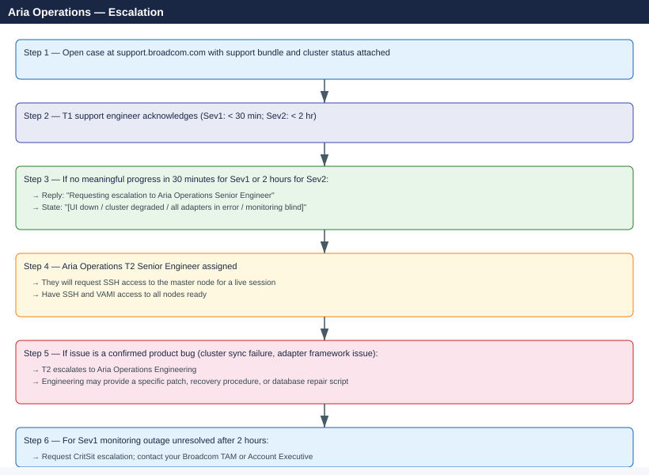

Aria Operations — Escalation¶


Before you begin¶
- Access required: Aria Ops Administrator role in the UI; SSH root access to the master node; Broadcom support account at support.broadcom.com with active Aria Operations entitlement
- Do NOT reboot cluster nodes without GSS guidance — the cluster has a specific startup order, and rebooting nodes out of sequence can prevent the cluster from forming quorum
- Do NOT delete adapters while the investigation is active — adapter configuration contains the connection history GSS uses to trace collection failures
- Do NOT restart all services simultaneously — restarting services on all nodes at once causes a cluster-wide disruption; only restart services on specific nodes if GSS directs you to
Pre-Escalation Self-Check¶
Run these before opening the case.
| Check | Where to look | Expected result |
|---|---|---|
| Aria Ops version | Administration → About | Note full version (e.g. 8.14.0 build 22546279) |
| Cluster node health | Administration → Cluster Management | All nodes show Online |
| Adapter collection status | Administration → Integrations → Adapter Instances | All adapters show OK or note error count |
| UI accessibility | Browse to https://<vra-ops-fqdn>/ui/ |
Login page loads |
| VAMI health | Browse to https://<vra-ops-fqdn>:5480 |
Cluster status page loads |
| Disk space | SSH: df -h or VAMI → Cluster Utilities |
All partitions above 15% free |
| Recent alerts | Aria Ops UI → Alerts → Active | Note any CRITICAL alerts on the vROps objects themselves |
| Data collection time | Aria Ops UI → Administration → Integrations | Note last collection timestamp per adapter |
Step-by-Step Data Collection¶
1. Get the Aria Operations version and cluster topology¶
In Aria Ops UI: click Administration → About. Note:
- Full version (e.g. 8.14.0)
- Build number
- Number of nodes (master + replica + data nodes)
Also in Administration → Cluster Management: note the role and status of each node.
2. Generate the support bundle¶
Via UI (recommended):
- In Aria Ops UI: click Administration → Cluster Management.
- Click Actions → Export Support Bundle (or the wrench icon → Support).
- Select all nodes.
- Wait 5–20 minutes for the bundle to be generated.
- Download the resulting archive.
Via SSH (for when UI is inaccessible):
# SSH to the Aria Operations master node
ssh root@<vra-ops-fqdn>
# Generate the support bundle using CaSA script
/usr/lib/vmware-casa/casa-support-bundle.sh
# Bundle is written to /tmp/ — check filename
ls -lh /tmp/support-bundle-*.zip
# Copy to a local machine
# scp root@<vra-ops-fqdn>:/tmp/support-bundle-*.zip /tmp/
root@aria-ops-master.corp.local:~# /usr/lib/vmware-casa/casa-support-bundle.sh
Generating Aria Operations support bundle...
Collecting system logs...
Collecting database diagnostics...
Collecting application logs...
Collecting configuration files...
Bundle generation completed successfully.
Support bundle saved to: /tmp/support-bundle-20240215-143022.zip
root@aria-ops-master.corp.local:~# ls -lh /tmp/support-bundle-*.zip
-rw-r--r-- 1 root root 487M Feb 15 14:30 /tmp/support-bundle-20240215-143022.zip
Common errors
casa-support-bundle.sh: command not found — Verify the CaSA package is installed with rpm -qa | grep casa and check the correct installation path.
Permission denied — Ensure you are logged in as root or have sudo privileges; the script requires elevated permissions to access system and application logs.
3. Check cluster node and service status¶
# SSH to the master node
ssh root@<vra-ops-fqdn>
# Check overall cluster service status (run on master node only)
service-control --status
# Or use the Aria Ops script directly
/usr/lib/vmware-vcopssuite/python/bin/vcops-admin status
# Check which services are running on this node
/usr/lib/vmware-vcopssuite/python/bin/vcops-admin --platform-service list
# Check disk space (low disk commonly causes collection failures)
df -h
# Check memory usage
free -h
root@aria-ops-master.corp.local:~# service-control --status
Service Status:
vpostgres RUNNING
vmon RUNNING
vmware-vcopssuite RUNNING
vmware-vcops-collector RUNNING
vmware-vcops-ui RUNNING
vmware-vcops-analytics RUNNING
root@aria-ops-master.corp.local:~# /usr/lib/vmware-vcopssuite/python/bin/vcops-admin status
Cluster Status: HEALTHY
Master Node: aria-ops-master.corp.local (192.168.1.45)
Replica Nodes: 2 active
Database Status: OPERATIONAL
Last Sync: 2024-01-15 14:32:18 UTC
root@aria-ops-master.corp.local:~# /usr/lib/vmware-vcopssuite/python/bin/vcops-admin --platform-service list
Platform Services on aria-ops-master.corp.local:
vmware-vcopssuite (RUNNING, PID: 8342)
vmware-vcops-collector (RUNNING, PID: 8156)
vmware-vcops-ui (RUNNING, PID: 8289)
vmware-vcops-analytics (RUNNING, PID: 8401)
vpostgres (RUNNING, PID: 7834)
root@aria-ops-master.corp.local:~# df -h
Filesystem Size Used Avail Use% Mounted on
/dev/mapper/vg0-root 100G 67G 28G 71% /
/dev/mapper/vg0-var 200G 156G 38G 79% /var
/dev/mapper/vg0-storage 500G 412G 78G 83% /storage
tmpfs 32G 0 32G 0% /dev/shm
root@aria-ops-master.corp.local:~# free -h
total used free shared buff/cache available
Mem: 64Gi 48Gi 8Gi 512Mi 8Gi 14Gi
Swap: 16Gi 2.5Gi 13.5Gi
Common errors
service-control: command not found — Ensure you are running the command on the master node and that /usr/lib/vmware-vcopssuite is in your PATH, or use the full path /usr/lib/vmware-vcopssuite/python/bin/vcops-admin instead.
Cluster Status: UNHEALTHY - Replica node aria-ops-replica-2 is DOWN — SSH to the affected replica node and run service-control --start to restart services, then verify connectivity and disk space on that node.
/var filesystem is 95% full - Collection may fail — Increase the /var partition size or delete old collection data using /usr/lib/vmware-vcopssuite/python/bin/vcops-admin --cleanup-old-data --days 30.
4. Collect adapter error details¶
In Aria Ops UI: navigate to Administration → Integrations → Adapter Instances.
For each adapter showing an error: 1. Click the adapter name. 2. Click Test Connection — note the result. 3. Click View Logs → note the most recent error message.
Export the adapter list: Administration → Integrations → Adapter Instances → Export.
5. Write the timeline¶
Aria Operations version: 8.14.0 build 22546279
Cluster: 1 master + 2 replica nodes (vrops01, vrops02, vrops03)
Adapters: 14 (vCenter, NSX, vSAN, vROps Self, Log Insight, etc.)
Issue first observed: 2026-06-14 08:00 UTC
Last known good collection: 2026-06-14 06:00 UTC
Changes in 24h before the issue:
- 07:00: vrops03 (replica node) rebooted for OS patch
- 08:00: vROps UI shows "Cluster degraded" — vrops03 not rejoining the cluster
- 08:15: All adapters showing collection error; no data received in UI
Steps already taken:
- VAMI on vrops03: node shows "Joining cluster" stuck for 45 min
- SSH to vrops03: services appear running but cluster sync is failing
- Did NOT restart services on vrops01 or vrops02
- Did NOT delete any adapters
Blast radius: Monitoring data collection halted for entire environment; 1,400 objects have no new data
How to Open the SR on support.broadcom.com¶
-
Go to support.broadcom.com and sign in with your Broadcom account.
-
Click Open a Support Request.
-
Under Product Group, select VMware Cloud Foundation and Virtualization → VMware Aria Operations (or search for "vRealize Operations").
-
Under Version, select your Aria Ops version from Step 1.
-
Under Severity, select:
- Severity 1 — Critical: Aria Ops UI completely down; all monitoring data collection has stopped; cluster has lost quorum; no workaround; production monitoring is blind
- Severity 2 — High: Cluster degraded (node offline); significant adapter collection failures; most data not being received; UI accessible but unreliable
- Severity 3 — Medium: Single adapter failing; specific management pack broken; some objects not collecting; workaround exists
-
Severity 4 — Low: How-to question, pre-upgrade planning, custom dashboard or policy question
-
In the Summary field: product + symptom + scope. Example:
Aria Operations 8.14 — replica node vrops03 not rejoining cluster after reboot, all 14 adapters in collection error, 1,400 objects with no data. -
In the Description field, paste:
- Aria Ops version and cluster topology from Step 1
- Cluster node status from Step 3 (
service-control --status) - Adapter error message from Step 4
-
The timeline from Step 5
-
Under Attachments, upload the support bundle from Step 2.
-
Click Submit. You will receive a case number by email immediately.
-
Severity 1 only: call Broadcom/VMware support after submission:
- North America: +1 877-486-9273 (24×7 for Severity 1)
- EMEA: +44 (0)3453 700 100
- State "Severity 1 — Aria Operations cluster degraded, monitoring down for entire environment" at the start of the call.
Escalation Path¶

What NOT to Do¶
| Do NOT do this | Why | What to do instead |
|---|---|---|
| Restart all services on all cluster nodes simultaneously | Causes cluster-wide disruption; all nodes go through a service restart together, which may prevent quorum from reforming | Only restart services on one node at a time if GSS instructs |
| Reboot cluster nodes without GSS direction | Nodes have a specific startup order (master must be fully up before replicas); out-of-order reboots prevent cluster formation | Let GSS confirm the safe reboot sequence |
| Delete adapters during investigation | Adapter config contains connection history needed for diagnosis | Leave all adapters in place; only reconfigure if GSS instructs |
| Apply a management pack (PAK) upgrade mid-incident | Changes the adapter codebase GSS is analysing | Freeze all PAK upgrades until the incident is resolved |
| Remove a node from the cluster without GSS | Node removal triggers data rebalancing; in a degraded state this may not complete | Let GSS confirm the node state before any cluster topology change |
Run vcops-admin cluster-restart without GSS |
Full cluster restart in a partially degraded state may cause data loss | Only run with explicit GSS instruction |
Useful Commands for Case Updates¶
# Paste these into every case update (SSH to master node as root)
# Version
/usr/lib/vmware-vcopssuite/python/bin/vcops-admin version
# Cluster node and service status
service-control --status
/usr/lib/vmware-vcopssuite/python/bin/vcops-admin status
# Disk space (low disk is a common cause)
df -h
# Memory usage
free -h
# Node cluster health check
cat /data/vcops/log/analytics/analytics.log | tail -100
# Adapter collection log (replace <adapter-name> with actual adapter name)
ls /data/vcops/log/solutions/<adapter-name>/
tail -100 /data/vcops/log/solutions/<adapter-name>/<adapter>.log
VMware Aria Operations Suite Version: 8.14.1.23456789
Build: 23456789
Service Status:
vcopssuite (pid 4521) is running...
analytics (pid 4523) is running...
collector (pid 4525) is running...
ui (pid 4527) is running...
postgres (pid 4529) is running...
Node Status:
Master Node: aria-ops-master-01.lab.local (192.168.1.50)
Replica Node 1: aria-ops-replica-01.lab.local (192.168.1.51) - ONLINE
Replica Node 2: aria-ops-replica-02.lab.local (192.168.1.52) - ONLINE
Cluster Status: HEALTHY
Filesystem Size Used Avail Use% Mounted on
/dev/sda1 500G 385G 115G 77% /
/dev/sdb1 2.0T 1.8T 200G 90% /data
/dev/sdc1 500G 450G 50G 90% /var/log
tmpfs 32G 8.2G 24G 26% /dev/shm
total used free shared buff/cache available
Mem: 64Gi 48Gi 8.2Gi 2.1Gi 7.8Gi 14Gi
2024-01-15 14:32:15 [INFO] Analytics engine started successfully
2024-01-15 14:32:18 [INFO] Cluster node sync completed
2024-01-15 14:32:22 [INFO] Data ingestion pipeline initialized
2024-01-15 14:35:45 [WARN] High memory utilization detected: 75%
2024-01-15 14:36:01 [INFO] Garbage collection cycle completed
vSphere/
NSX/
vRealize-Automation/
2024-01-15 14:38:22 [INFO] vSphere adapter collection cycle started
2024-01-15 14:38:45 [INFO] Collected 1247 objects from vCenter
2024-01-15 14:39:12 [INFO] Data processing completed successfully
Common errors
service-control: command not found — Use the full path /usr/lib/vmware-vcopssuite/python/bin/vcops-admin or verify the service-control utility is installed in the current PATH.
tail: cannot open '/data/vcops/log/solutions/<adapter-name>/<adapter>.log' for reading: No such file or directory — Replace <adapter-name> and <adapter> with the actual adapter name (e.g., vSphere or NSX) by first listing the directory with ls /data/vcops/log/solutions/.
Filesystem ... Use% ... 100% /data — Free up disk space immediately as the /data partition is full and will cause collection failures; consider archiving old logs or expanding the volume.
Support SLA Reference¶
| Severity | Definition | Initial Response SLA |
|---|---|---|
| Sev 1 — Critical | UI down; all collection stopped; cluster lost quorum | < 30 min (24×7) |
| Sev 2 — High | Cluster degraded; node offline; significant adapter failures | < 2 hours (24×7) |
| Sev 3 — Medium | Single adapter failing; management pack issue; workaround exists | < 8 hours |
| Sev 4 — Low | How-to, pre-upgrade, custom report/policy, non-urgent | Next business day |
See also¶
Verify resolution¶
- Browse to the Aria Ops UI: login page loads and Dashboard displays
- Navigate to Administration → Cluster Management: all nodes show
Online - Navigate to Administration → Integrations → Adapter Instances: all adapters show
OKorCollecting Data - Verify recent data is flowing: check a vCenter adapter and confirm the most recent collection timestamp is within the last collection cycle (typically 5 minutes)
- Check disk space:
df -hon all nodes — all partitions above 15% free - Monitor for one full collection cycle (5 minutes) to confirm all adapters complete collection without errors